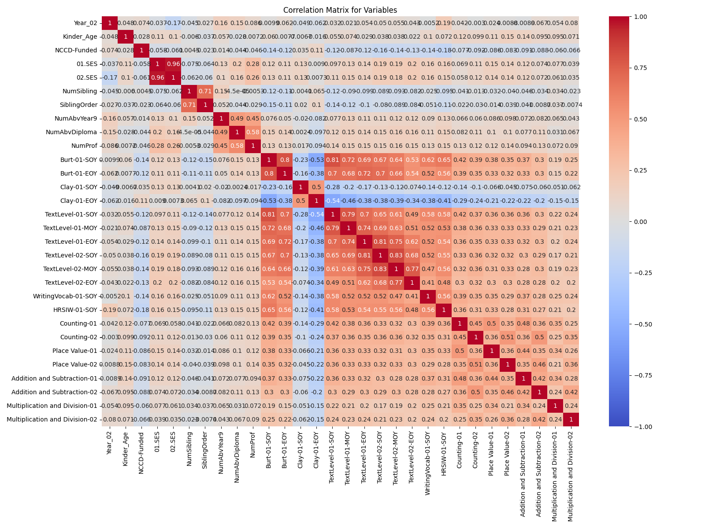

Last updated: 2025-01-26 11:18:03
The primary concern of our educational initiative is to identify primary school students at risk for writing difficulties using machine learning models. This research aims to address the business problem of predicting which students will likely require early intervention by employing data analytics with a supervised learning approach. Timely intervention, particularly in foundational writing skills, is crucial in education. Insights from assessments like the National Assessment Program – Literacy and Numeracy (NAPLAN) provide benchmarks for student performance, aiding in the identification of academic intervention needs. Supervised learning methods, including decision trees and clustering techniques, have proven effective in discerning patterns in diverse educational data (Hastie et al., 2009).
Our dataset includes variables such as socio-economic status, age, gender, disability, demographic factors, number of siblings, and parents' education levels, offering a comprehensive view of influences on student learning. Data preprocessing involved cleaning to handle missing values, standardizing entries for analysis, and normalizing numerical features using StandardScaler while encoding categorical data with OneHotEncoder. A 70:30 split for training and testing was used, with stratification on the target variable to ensure balanced datasets. EDA included descriptive statistics and visualization of key variables' relationships with Year3_Writing_At_Risk, revealing significant correlations, e.g., consistent performance in literacy assessments like Burt reading tests.
Key insights from the correlation matrix (Figure 1) showed strong positive correlations between different time points of literacy assessments, indicating stable student performance over time. Negative correlations suggested that higher scores in early assessments reduce the risk of writing difficulties in Year 3.
We utilized two models: Logistic Regression for its interpretability in binary classification, achieving an overall accuracy of 75% with better performance in identifying non-at-risk students (precision: 0.78, recall: 0.87) compared to at-risk students (precision: 0.66, recall: 0.51). An Artificial Neural Network (ANN) was employed to capture non-linear relationships, slightly outperforming with an accuracy of 71%, with similar precision and recall patterns. K-means clustering was used for unsupervised learning, revealing inherent groupings in student data based on literacy and numeracy levels, visualized in Figure 2.

The ROC curves (Figure 3) demonstrate that the logistic regression model (AUC 0.780) outperforms the ANN (AUC 0.721) in distinguishing between at-risk and non-at-risk students. Both models surpass a random classifier, with logistic regression providing more consistent and accurate predictions.
Based on our validation, logistic regression is recommended for its effectiveness in predicting writing difficulties, offering better interpretability for educators to tailor interventions. Future work should involve expanding the dataset, exploring other ML techniques like ensemble methods, and potentially integrating these models into real-time systems for dynamic student evaluation.
The analysis was conducted in Python utilizing scikit-learn for machine learning, Pandas for data manipulation, and NumPy for numerical computations. Data preparation followed a structured approach, ensuring consistency in model application through a preprocessing pipeline. Regular retraining is advised due to evolving student data. Figure 4 illustrates the recommended machine process flow for deploying the logistic regression model, emphasizing data collection, preprocessing, feature selection, and model training.
In summary, this analysis used machine learning to predict which students are at risk of low writing performance by Year 3. Logistic regression was found to be the most accurate and interpretable method, providing educators with actionable insights. The K-means clustering model enriched our understanding by revealing natural student groupings. Implementing these models in real-time could facilitate early interventions, ensuring students receive the attention needed for improved academic outcomes.